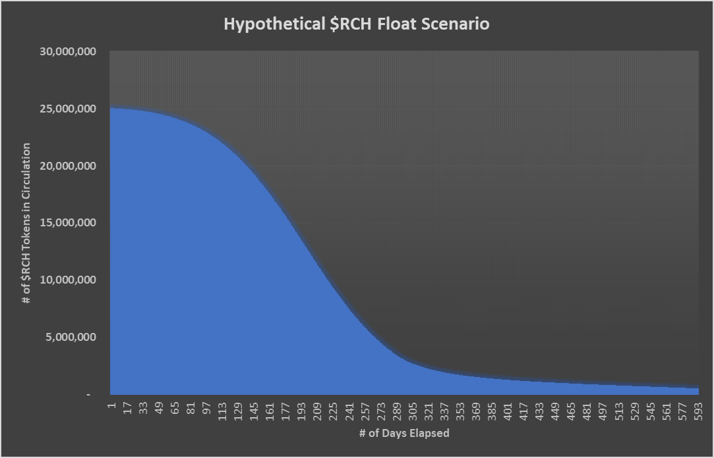
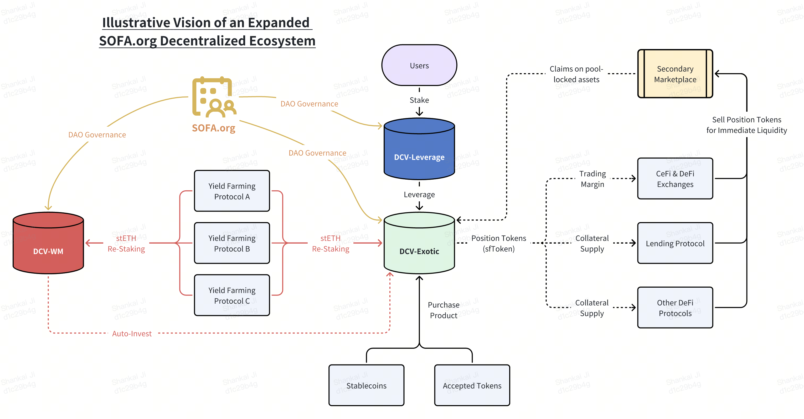

$RCH Utility Token
$RCH is the core token within the SOFA ecosystem, embodying its entire value creation. Unlike the maturity of other protocols, $RCH will be launched in a true 'fair launch' manner, with no pre-sales allocations to any interest group - not even to the core development team or investors. The only way to acquire $RCH is by using and executing transactions within the SOFA.org protocols, or via referral rewards at a later time.
The team has taken a completely selfless and unorthodox approach to ensure that all value accrual will exclusively be rolling up to the protocol's core users. We want to make sure that the protocol is setup to benefit over the long-run, and free from toxic short-term pump-and-dump behaviour that doomed numerous DeFi projects in the past.
Acquiring $RCH Tokens
The only way to obtain $RCH is to transact and execute transactions with the SOFA.org ecosystem. A set amount of $RCH will be airdropped daily to our protocol users, with received rewards to be split pro-rata based on the user's transaction volumes on the day.
$RCH Token Float
- Total supply of $RCH is capped at 37,000,000.
- 60% of $RCH supply (25 million) is pre-minted and locked in a Uniswap liquidity pool (vs ETH), while the remaining 40% will be released on a pre-determined airdrop schedule to protocol users and supporters.
- 100% of all SOFA.org protocol revenues will be used to purchase and burn $RCH from Uniswap's LP pool.
- As transaction volumes increase, the outstanding float of $RCH will decrease as burn rates overwhelm the daily airdrops. This creates a net deflationary supply drain, pushing up the price of $RCH into a higher equilibrium, with benefits accuring completely to token holders (users).
- Over the long-term, price accretion on RCH should be a direct reflection of the protocol's accumulated usage, aligning the success of the protocol with significant capital gains to our core users and token holders.
$RCH Tokenomics Breakdown
Basic Vault

At project launch, 60% of $RCH (25 million tokens) is pre-minted and placed into Uniswap's L3 pool on Ethereum along with $500,000 of ETH. This pool of $RCH and ETH is referred to as the 'Basic Vault'.
Please note, the Basic Vault is not owned by anyone. After depositing into the LP, the corresponding Uniswap LP tokens are promptly destroyed, ensuring that the initial liquidity of the Basic Vault can never be withdrawn.
This guarantees that the $RCH float available will eventually be far less than what was originally locked into the LP, thereby setting an effective floor on the value of $RCH at its initial price.
Airdrop Rewards for Traders
Furthermore, the remaining 40% (12 million tokens) of $RCH will be airdropped to ecosystem users according to a pre-determined release schedule.
Initially, 12,500 of $RCH tokens will be airdropped daily over the first 180 days. After which, the airdropped amounts will decrease by an incremental 20% every 180 days ad infinitum.
| Days after Launch | Daily Airdrop |
|---|---|
| 0 | 12,500 |
| 180 | 10,000 |
| 360 | 8,000 |
| 540 | 6,400 |
| 720 | 5,120 |
| 900 | 4,096 |
| 1080 | 3,276.8 |
| …… | …… |
Hypothetical $RCH Float Scenario (LP + Cumulative Airdrops)
Base assumptions
- 0.02% protocol service fee, 1,000,000 USDT in day 1 protocol TVL with 2% daily growth, 12.5k in daily notional $RCH airdrops with 50% sold back into LP pool

Positive Reflexivity with Self-Correcting Downside Adjustments

Given its deflationary supply model, increased protocol transactions should lead to a higher $RCH price. As the utility token's price increases, so does the value of the upcoming airdrops, which encourages additional transactions and creates a positive feedback loop for the entire ecosystem.
On the other hand, should the token price fall precipitously for whatever reason, the USDT based protocol transaction fees will be able to burn a greater quantity of $RCH tokens from the daily buyback operations. This serves as a powerful, self-correcting adjustment to stabilize the token price, until the daily transactions can catch-up to resume a net supply deficit and restart the upward $RCH price trajectory.
No Exit-Liquidity Dumps
Learning from the experience of prior projects, $RCH's fair launch mechanism will eliminate any negative 'cliff vesting' impacts or insider liquidity dumps as no party is entitled to any $RCH at launch. Furthermore, the initial liquidity of the Basic Vault is locked and cannot be withdrawn by its contributors, ensuring a minimum level of liquidity regardless of market developments. Finally, as long as protocol transactions continue to happen, this should be a net deflationary supply impact on $RCH, granting the token price a very strong tailwind for the long-haul.
Infinitely Scalable Ecosystem

In the future, any aspiring DeFi project that meets the standards of SOFA.org can apply to join the ecosystem as a protocol partner.
Benefits of Joining the Ecosystem
- Recommendation by SOFA.org as a DeFi project that observes and upholds the association's decentralized values and design, serving as an expedited pathway to connect with rest of the SOFA ecosystem.
- Transactions within the greater SOFA ecosystem also qualify for the daily $RCH airdrops.
Prerequisites for Joining the Ecosystem
- Adherence to True DeFi Standards: Projects must meet the true DeFi standards set forth by SOFA.org, supporting the continued growth of the decentralisation mission.
- Allocation of Fees to Burn the Native Token: Projects should allocate all or a portion of their transaction fees to burn the $RCH token, contributing to the deflationary mechanism and accelerating the value creep to our loyal users.
- Approval through Collective Voting by $SOFA Holders: Projects must be approved to join the ecosystem through a collective voting process by $SOFA token holders as a form of community endorsement.
As more protocols join the SOFA.org ecosystem, more transaction fees will be allocated towards token buybacks, creating profound gains for our token holders. At the same time, we would also have succeeded in breaking new grounds on how digital assets can be settled on-chain, while offering a robust tri-party solution for mitigating counterparty risks across both DeFi and CeFi platforms.